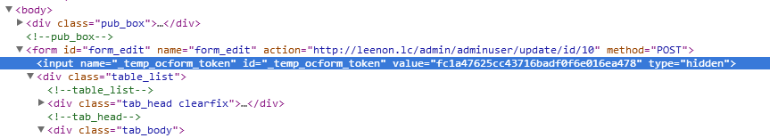
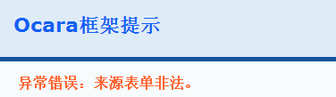
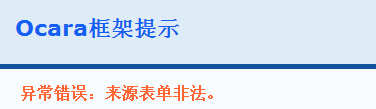

6.7 表单令牌
1、什么是表单令牌
为了防止XSS攻击，或者防止表单重复提交造成重复数据添加或更新，所以为每个表单设置一个唯一的ID标识，即表单令牌.
表单令牌有存活期。
当表单提交后，若后台处理成功，就结束存活期，此时如果点击浏览器返回上一页进行再次提交，会提示表单来源非法，防止重复提交和XSS攻击。
若后台处理失败，不会结束存活期，可以重新返回提交。
2、表单令牌的保存
表单令牌是加密的，服务端保存在session当中，并且浏览器在<form>标签后面有一个隐藏域，将其再保存在客户端。
如下截图中蓝底的input标签：

3、表单令牌验证
表单提交之后，框架会首先检测该提交的表单令牌码是否存在，如果不存在会提示表单不存在或已过期。如下截图：
 然后，会将表单令牌与session中保存的对应令牌码进行比较，如果不一致，则会提示表单来源非法。如下截图所示：

4、如何修改表单令牌
（1）自定义表单令牌隐藏域名称
表单令牌隐藏域名称默认为_oc_form_token_name，其中的“_oc_”是自动加上的。
默认设置是在application/config/system.php文件FORM的token_tag配置选项。
如下所示：
然后，会将表单令牌与session中保存的对应令牌码进行比较，如果不一致，则会提示表单来源非法。如下截图所示：

4、如何修改表单令牌
（1）自定义表单令牌隐藏域名称
表单令牌隐藏域名称默认为_oc_form_token_name，其中的“_oc_”是自动加上的。
默认设置是在application/config/system.php文件FORM的token_tag配置选项。
如下所示：
/*
* 表单配置
*/
'FORM' => array(
'token_tag' => 'form_token_name', //表单令牌隐藏域名称
'check_repeat_submit' => 1, // 表单重复提交检查
),
（2）自定义表单令牌的加密算法
框架对表单令牌的加密一般是md5()函数加密的，其中必须包括当前路由 + 随机数，否则会出现验证问题。
如果要自定义加密算法，要在application/config/resource.php配置文件中配置回调函数。
默认选项是如下generate_token：
/*
* 表单使用
*/
'form' => array(
'generate_token' => '', //表单令牌加密事件回调
),
（3） 如何手动控制表单令牌的过期?
框架默认是在action类的submit()方法执行以后，删除当前表单令牌，让表单令牌过期。
如果想在此之前手动过期，就使用formManager表单令牌对象的clearToken()清除即可。
代码实例如下：
class AddAction extends ItemController
{
public function __action(){}
public function submit()
{
//处理掉提交的数据
$this->model()->data()->save();
//手动清除表单令牌
$this->formManager->clearToken();
}
}
（4）如何取消表单令牌验证？（仅用于开发测试）
如果想取消表单令牌是否合法的验证，只要在提交处理时在__action方法中执行控制器的isCheckForm(false)方法即可。
isCheckForm([check])
| 名称 |
描述 |
| name |
必需。同上。 |
| check |
可选。是否检测表单令牌，为true表示检测，false不检测。如果不传此参数，表示获取是否检测表单令牌的设置值。 |
注：表单令牌验证是防止XSS攻击，所以只建议在代码开发测试时取消。
class AddAction extends ItemController
{
public function __action()
{
//取消表单令牌检测
$this->isCheckForm(false);
}
public function registerForms()
{
$url = ocUrl($this->getRoute());
$this->form('form_add')
->init($url)
->model('\app\model\database\Item');
}
}